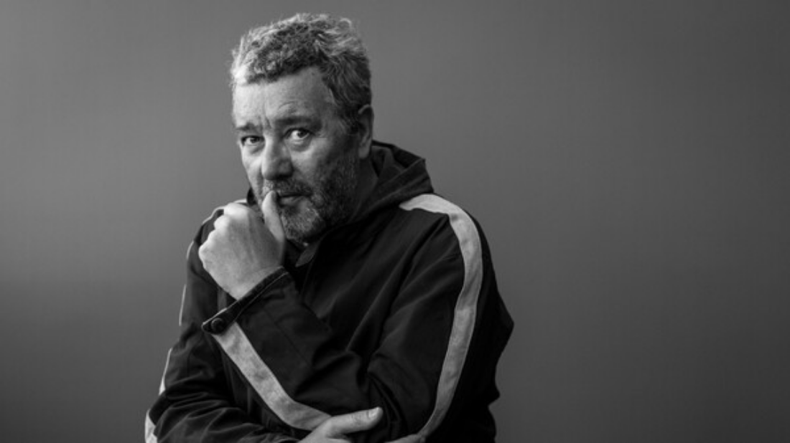

디자인은 마케팅 수단이 되어서는 안된다고 생각한다. 어떤 물건을 다른 것보다 단지 더 예쁘게만 만들었다면 쓸모 없는 것이다.
디자인이 제품을 더 많이 팔게 하는 마케팅 수단이 되어서는 안된다는 것이다. 난 일시적 유행이나 스타일에는 관심없다.
나는 유한한 시간에 구속받지 않는 작업을 하려고 노력한다. 기본적으로 내 디자인은 인간에 대한 사랑과 관심에서 출발한다.
가령 칫솔을 디자인할 때도 칫솔 모양을 어떻게 만들까 부터 궁리하는 게 아니고 칫솔이 들어갈 입, 그 입의 주인공인 사람,
그 사람이 존재하는 사회를 먼저 생각한다는 것.
또한 세 발 달린 의자를 디자인한 적이 있다. 단지 멋지게 보이려고 그런 게 아니었다. 의자가 400개 들어가는 카페를
디자인할 때 였는데, 의자 다리를 하나씩만 줄여도 400개나 줄어든다. 그러면 좁은 공간에서 웨이터들이 음식을 나르다가
의자 다리에 부딪칠 가능성이 400번 줄어들 것이라는 생각에 다리 세 개짜리 의자를 만든 것이다.
나는 파리에 사무실이 있지만 잘 안 간다. 영화관에도 안 가고, TV도 안 보며, 신문도 안 본다. 굴에 대해 연구할 때는
물과 전기도 안 들어오는 조그만 섬에 가있고, 배 안이나 비행기에서 때론 숲 속에서 작업할 때도 있다.
고급 문학작품이나 과학 관련 서적을 읽으며 주로 디자인 영감을 얻는다. 전 세계 기업들이 이 스타 디자이너에게
수많은 디자인을 의뢰하지만, 나는 그 중 95%를 거절한다. 총을 디자인해달라거나 담배회사, 술회사, 도박회사, 석유관련 회사,
출처가 의심스러운 회사와는 일하지 않는다. 사람들에게 얼마나 행복을 주는가 하는 철학적, 윤리적 관점에서
내가 디자인할 프로젝트를 고른다. 생명이 오래가는 디자인은 스타일이 아니라, 기능(function) 있는 디자인이다.
부자든 가난한 사람이든 누구나 좋은 디자인을 누릴 수 있어야 한다는 신념으로 디자인한다. 돈이 많고 적음에 구애받지 않고,
그 제품을 사용할 사람에 대해 존경심과 사랑을 갖고 디자인한다.
